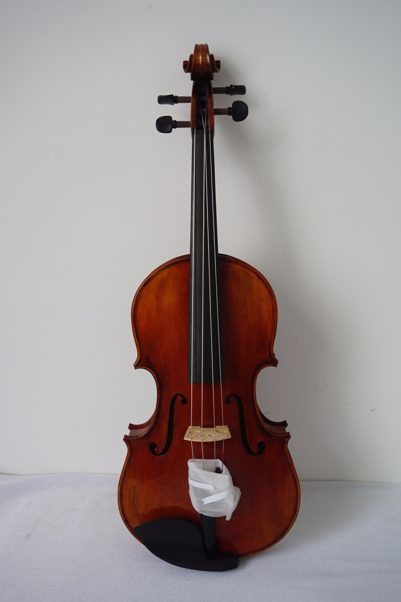

Le violon

Le violon est l’un des instruments de musique les plus populaires au monde.
Il est également l’un des plus anciens, ayant été inventé au 15ᵉ siècle.
Le violon est utilisé dans de nombreux genres de musique, du classique au folk en passant par le jazz et le rock